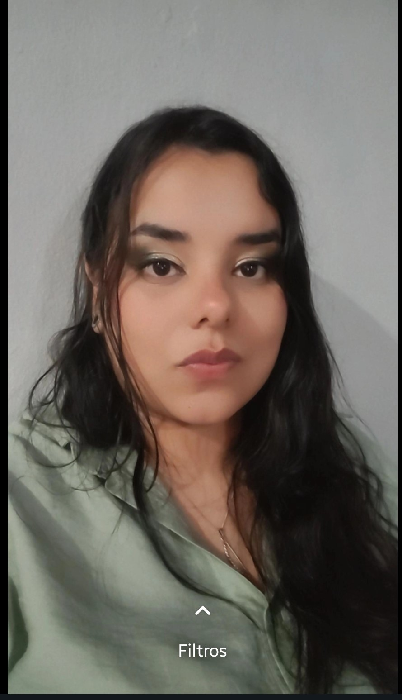

Sobre Mim

Olá, meu nome é Gabriela. Atualmente estou a frequentando o meu segundo ano de Ciência da Computação, um percurso académico que escolhi seguir por ser verdadeiramente apaixonada por tecnologia. Busco constantemente adquirir novos conhecimentos na área para expandir os meus horizontes e ampliar a minha visão profissional.
A minha jornada no universo digital envolve um profundo interesse pela resolução de problemas complexos de hardware e software. Devido a esta facilidade em diagnosticar falhas e realizar manutenções técnicas em computadores e celulares, acabei por me tornar a principal referência para suporte técnico entre amigos, familiares e colegas.
O meu foco principal está em absorver ao máximo os fundamentos da computação e o desenvolvimento de sistemas para construir soluções sólidas, eficientes e inovadoras.
Formação Acadêmica
Bacharelado em Ciência da Computação
Uninter | 2º Ano (Em Andamento)
Desenvolvimento de bases sólidas em algoritmos, estrutura de dados, architecture de computadores e fundamentos de desenvolvimento web, cursado na modalidade à distância (EAD).
Curso Técnico em Segurança do Trabalho
Concluído | Formação Técnica Profissional
Estudo detalhado de normas regulamentadoras, com destaque para o Trabalho de Conclusão de Curso (TCC) focado em Ergonomia no Ambiente de Escritório, aplicando conceitos de saúde ocupacional para profissionais de tecnologia.
Portfólio
Aqui estão alguns dos projetos acadêmicos e laboratoriais que desenvolvi de forma nativa:

Empoderamento Tecnológico para a Terceira Idade
Projeto de atividade extensionista universitária com foco em inclusão digital. Desenvolvimento de dinâmicas e materiais de suporte para capacitar idosos no uso autônomo e seguro de smartphones e computadores.
Web Portfólio Pessoal
Este próprio site! Desenvolvido do zero como projeto prático acadêmico, sem o auxílio de frameworks ou bibliotecas externas, aplicando técnicas nativas de CSS Grid, Flexbox e manipulação de eventos em JavaScript.
Contato
Preencha o formulário abaixo para enviar uma mensagem diretamente para mim: